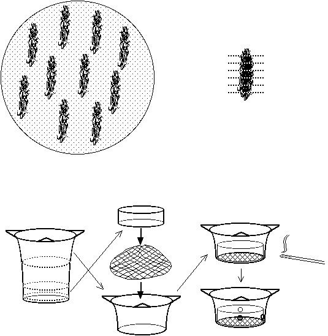

<pre>
TRANSFORMATION OF ARABIDOPSIS THALIANA

From Dirk Valvekens et al.(Dirk Valvekens, Marc Van Montagu, & Mieke Van
Lijsebettens 1988. Proc. Natl. Acad Sci. 85, 5536-5540.), as used by Caroline
Dean et al (Caroline Dean, Department of Molecular Genetics, The Cambridge
Laboratory, The John Innes Centre for Plant Science Research, Colney Lane,
Norwich, NR4 7UJ, England.) 


        Contents:
MEDIA 
GROWTH OF PLANTS 
REGENERATION AND TRANSFORMATION OF ROOT EXPLANTS 
GERMINATION OF F1 PROGENY 

*  Unless otherwise stated all procedures should be carried out aseptically
using sterile solutions and equipment. 

MEDIA

*  All media are used in standard plastic disposable petri dishes (e.g.,
Sterilin) or, for later stages, Magenta GA 7 pots (Magenta Corp., USA).  During
tissue-culturing,  petri dishes are sealed with 1/2" Micropore (3M) medical
gas-permeable tape -- 1" tape is used on Magenta pots.  (The use of
Nescofilm,  lowers the efficiency of regeneration at all stages due to
reduced gaseous exchange.)  Hormones are dissolved in dimethyl sulfoxide (DMSO)
as x1000 stocks (DMSO should be taken from either freshly opened or frozen
stocks).  Antibiotics are dissolved in water as x1000 stocks (except for
vancomycin, which is made at x100) and subsequently filter-sterilised. Hormones
and antibiotics are added after autoclaving and cooling of the media to 65oC. 

1.  GERMINATION MEDIUM (GM) 1a.  GM K50
 1x Murashige and Skoog salt mixture (Flow Labs)  As GM, but supplemented with:
 1% sucrose  50 mgl-1 kanamycin  (Sigma)
 100 mgl-1 inositol
    1.0 mgl-1 thiamine
     0.5 mgl-1 pyridoxine
     0.5 mgl-1 nicotinic acid
 0.5 gl-1 2-(N-morpholino)ethanesulfonic acid (MES)
 (adjust to pH  5.7 with 1M KOH)
 0.8% Difco Bacto agar

2.  0.5/0.05 CALLUS-INDUCING MEDIUM (CIM)
 1x Gamborg's B5 medium (without 2,4-dichlorophenoxyacetic acid (2,4-D),
kinetin, and  sucrose) (Flow Labs.) 
 2% glucose
 0.5 gl-1 MES (pH  5.7, adjusted with 1N KOH)
 0.5 mgl-1 2,4-D (Sigma)
 0.05 mgl-1 kinetin (Sigma)
 0.8 % agar (for solid CIM medium)
3.  0.15/5 SHOOT-INDUCING MEDIUM (SIM) 3a.  SIM V750
 Gamborg's B5 medium (Flow Labs)  As SIM, but supplemented with:
 2% glucose  750 mgl-1 vancomycin (Sigma (Vancomycin  can be obtained from a
pharmacist, this is much cheaper than buying it from Sigma.)) 
 0.5 gl-1 MES (pH 5.7)  0.8% agar
 5 mgl-1 N6-(2-isopentenyl)adenine (2ip) (Sigma)
 0.15 mgl-1 indole-3-acetic acid (IAA) (Sigma)

3b.  SIM V750 K50 3c.  SIM V500 K50
 As SIM, but supplemented with:  As SIM, but supplemented with:
 750 mgl-1 vancomycin  500 mgl-1 vancomycin
 50 mgl-1 kanamycin  50 mgl-1 kanamycin
 0.8% agar  0.8% agar

GROWTH OF PLANTS

1.  SEED STERILISATION
  (i) Place seeds into a 15 ml polypropylene centrifuge tube (Falcon) or similar
container. 
  (ii) Add 70% EtOH for 2 min.  Remove EtOH with pipette.
  (iii) Replace with 5% commercial bleach (~0.25% available chlorine) containing
one drop of Tween 20 per 50 ml.  Leave for 15 min, shaking regularly. 
  (iii) Wash seeds in sterile, distilled water (dH20) x 5.
  (iv) After last wash, either:
(a)  Dry seed on sterile filter paper and sprinkle on GM, or
(b)  Leave seeds in 1.0 ml dH20.  Add 1 ml of liquid GM.  Invert and pour as a
soft overlay.  In both cases, ensure that the seeds are evenly distributed at
around 100 per plate. 

2.  GROWTH OF SEEDLINGS
    (i) Incubate seeds on GM in culture room at 20-25oC (continuous light or 16
h light/8 h dark cycle). 
   (ii) Leave until just before any visible sign of floral buds (approx. 3
weeks).  This ensures maximum root growth prior to flowering and subsequent
senescence. 

REGENERATION AND TRANSFORMATION OF ROOTS

*  For both regeneration and transformation, white roots of any age can be used.

1.  DAY ONE
    (i) Using a scalpel, cut-off all the green (upper) parts of the plantlets to
leave only the root systems. 
   (ii) Disrupt agar by pulling it apart with forceps.
  (iii) Tease out bunches of roots.  Excess agar should be removed by rinsing
the roots in a petri dish containing liquid CIM. 
  (iv) Lay out the washed bunches of roots onto plates containing solid CIM.
Gently press down on each bunch to ensure that the roots are in 
contact with the surface of the agar.
  
   (v) Incubate for 3 d in growth room.

2.  DAY FOUR    (i) After ensuring that there is no visible sign of
contamination,  stack several (5-30) callus-induced roots into an empty petri
dish. 
   (ii) Cut the roots into 0.5 cm explants.
  (iii) Transfer the root explants into a sieve in a petri dish containing 20 ml
of liquid CIM medium. Swirl with blunt-nosed forceps to ensure that all the
pieces are bathed. 
 *  Custom-made, autoclavable and re-usable, sieves are used to hold the
explants during Agrobacterium infections and washings of root explants.  These
sieves are made from 100 ml plastic three-cornered beakers and 100 um nylon
mesh.  The top 3-4 cm is cut off the beaker  and the mesh held in place across
the bottom of this piece by pushing a ring 2 cm high cut  from just above the
base of the beaker into the lower portion of the top part.  The two pieces  are
sealed together by pushing a hot metal rod through them in several places
(Sieves can also be purchased from: Wilson Sieves, 2 Long Acre, Common Lane,
Hucknall, Nottingham, NG15 6QD, UK.  Tel: +44-115-9630164 (6-11p.m.); FAX:
+44-115-9455388 (f.a.o. "Wilson Sieves")). 

  (iv) Add 0.5-1.0 ml of Agrobacterium culture grown overnight at 28oC in Luria
broth at 200rpm. Swirl with blunt-nosed forceps.  Leave to co-cultivate for 2
min. 
 *  We have found that C58C1RifR(pGV2260) Agrobacterium strains transform
Arabidopsis  with higher efficiency than LBA4404.  Binary as well as
co-integration vectors may be used  (Valvekens et al., 1988).  Selection using
kanamycin  (50 mgml-1) with 35S-neo/pNos-neo or  pTR-neo constructs has given
significantly more transformants than selection on hygromycin  using a pTR- hyg
construct. 

  (v) Lift sieve out of buffer and drain.  Press  the explants down onto the
mesh to remove as much excess buffer and agar as possible.  Push the semi-dried
explants together into a lump. 
  (vi) Blot this root mass dry on double-thick sterile filter-paper ( Whatman
No.1) in a petri dish. (This may have to be repeated once or twice.) 
 *  It is important to remove as much of the Agrobacterium inoculum as possible,
or the plates  will be overgrown with bacteria. 

  (vii) If the root mass is large, divide it into two or three.  Place each
piece onto solidified CIM medium in a petri dish.  Tease each lump into about 30
small explants each approx. 0.5 x 0.5 x 1.0 cm.  Evenly distribute the explants
over the plate and gently press them onto the surface to ensure contact with the
medium. 
 *  Ensure that the plates are very dry to start with or the agrobacteria will
grow too quickly.   (viii) Incubate plates in the growth room for 2 d to allow
co-cultivation of Agrobacterium. Plates overgrown with agrobacteria after this
period should be rejected as is is unlikely that the plant material will
regenerate. 

3.  DAY SIX
  (i) Transfer the explants to a sieve (as above) in 20-25 ml of liquid SIM. 
Agitate with blunt-nosed forceps to wash off the agrobacteria.  The bathing
medium should become somewhat turbid. Repeat and then lift sieve out of buffer
and drain.  Press down the explants down onto the mesh to remove as much buffer
and agrobacteria as possible.  Push the semi-dried explants together into a
mass. 
  (ii) Blot this on double-thick sterile filter-paper in a petri dish until the
root mass is as dry as possible.  (This may have to be repeated once or twice.) 
Re-divide the lump into small explants again and transfer to solidified SIM V750
K50 medium, taking care that root explants are in close contact with the medium.
  (iii) Incubate in growth room.
 *  Do the controls first.  Split the root mass into two.  One half, re-divide
onto SIM V750; the  other onto SIM V750 K50.  The former is the positive control
(masses of green shoots  should regenerate) whilst the latter is the negative
control (no shoots should regenerate). 
 *  For non-control plates, transfer all divided explants onto SIM V750 K50. 

4.  DAY n
   (i) In growth room, the positive control plates will start to green within 10
d.  On the non-control plates, tiny green calli appear on the yellowish
root-explants after 3 weeks. 
  (ii) Every 10 d, transfer explants to fresh SIM V750 K50.  Shoots (often
initially vitreous) will intermittently appear from the green calli over the
next several weeks. 
  (iii) Transfer these shoots to GM, where they will lose their vitreous
structure within a few days. 
  (iv) On GM, the excised shoots will develop into multiple rosette-like
strucures.  Every 10-15 d, disrupt these structures and select the most
normal-looking plant for transfer to fresh GM plates. 
 *  Transfer only one rosette per clump of tissue in order to ensure that all
transformants are independent T-DNA insertions. 
 *  Regenerants from the ecotype Landsberg erecta, root very poorly compared
with other ecotypes.  The L. erecta transformants will, nevertheless, flower
without rooting. 

  (v) At the first sign of flower-bud formation, transfer individual plants to
single Magenta GA7 pots. Leave the lids of these pots very loosely in place, but
prevented from falling off by securing with 1" Micropore tape. 
 *  As anthers will not dehisce in a damp atmosphere, it is essential to keep
the humidity low in these pots. 

  (vi) Harvest seed pods when they turn yellowish-brown and are therefore
mature.  If this is done aseptically, it obviates the need to sterilise the
seeds for the next generation. 

GERMINATION OF F1 PROGENY

*  To test for transformation, F1 seedlings are germinated on GM K50.

    (i) Put seeds on GM K50.  Seal with Micropore tape.
   (ii) Put petri dishes  in the dark at 4oC (refrigerator) for 3-5 d, to break
seed dormancy. 
 *  Step (ii) is not necessary if seeds were stored for more than a month.

  (iii)  Incubate petri dishes in growth room for 2 weeks.  Sensitive seedlings
form neither roots nor leaves, and have white cotyledons.  Transformed seedlings
are phenotypically normal. 

</pre>



</html>
